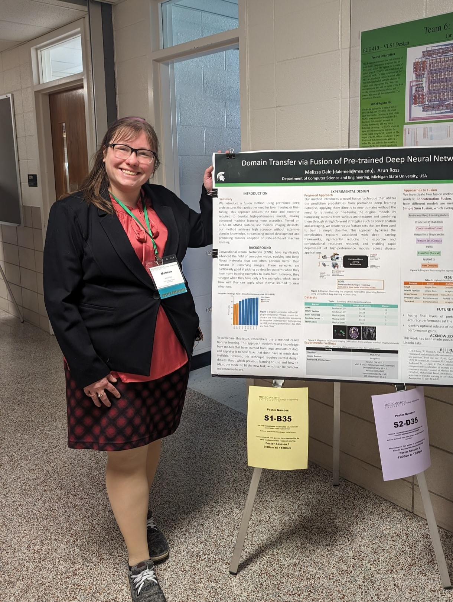
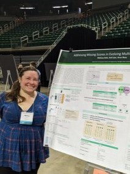
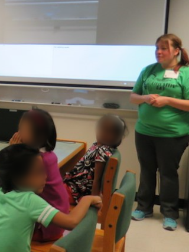

Melissa R. Dale, PhD
Machine Learning Research | Data Scientist
Modeling complex systems under uncertainty
ABOUT
I’m a machine learning researcher with a PhD in Computer Science and Engineering, and I’m drawn to problems where the data is messy, incomplete, or difficult to interpret. I build practical, carefully evaluated models that combine information from multiple sources, with a strong focus on understanding when a model works, when it fails, and what its results actually mean. I enjoy turning complex technical questions into clear, reproducible analyses that can support better real-world decisions.

EDUCATION

PUBLICATIONS

EXPERIENCE

PROJECTS

BEYOND THE RESUME
I care about mentoring the next generation of STEM students and making technical material more approachable. Outside of research, I enjoy creative technical projects that combine programming, design, and real-world problem solving.